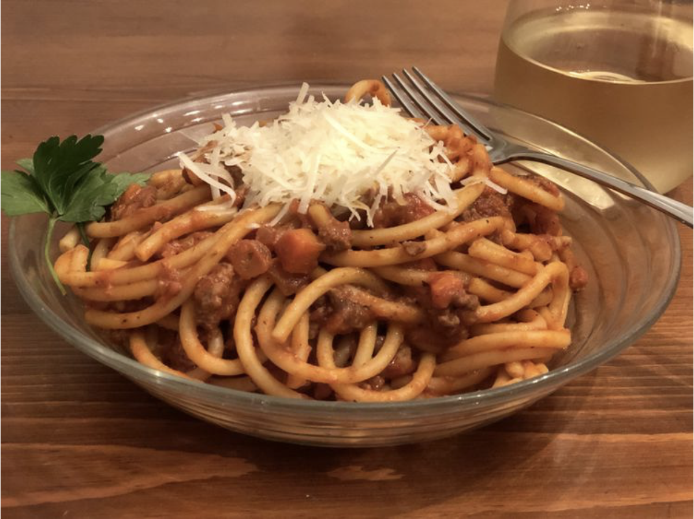

Mom's Spaghetti Bolognese Recipe

Description
Spaghetti bolognese consists of spaghetti (long strings of pasta) with an Italian ragù (meat sauce) made with minced beef, bacon and tomatoes, served with Parmesan cheese.
Spaghetti Bolognese Ingredients
- 1 (16 ounce) package spaghetti
- 2 tablespoons olive oil
- 3 slices bacon, diced
- 1 large onion, finely chopped
- 1 stalk celery, finely chopped
- 1 carrot, finely chopped
- 1 teaspoon dried oregano
- 3 cloves garlic, minced
- 1 pound lean ground beef
- 2 tablespoons balsamic vinegar
- 2 (28 ounce) cans crushed tomatoes
- 2 tablespoons tomato paste
- 2 teaspoons white sugar
- salt and ground black pepper to taste
- 2 tablespoons chopped fresh basil
- ¼ cup freshly grated Parmesan cheese
How to make Spaghetti bolognese Step-By Step
- Bring a large pot of lightly salted water to a rolling boil. Cook the spaghetti in the boiling water until cooked through yet firm to the bite, about 12 minutes; drain.
- Heat the olive oil in a large pot over medium heat. Cook the bacon in the oil until crisp, 8 to 10 minutes. Stir the onion, celery, carrot, and oregano into the bacon; continue cooking until the vegetables begin to soften, another 8 to 10 minutes. Add the garlic and cook until fragrant, about 2 minutes. Crumble the ground beef into the vegetable mixture; cook and stir until the beef is completely cooked and no longer pink, 8 to 10 minutes.
- Pour the balsamic vinegar over the ground beef mixture; allow to simmer until the liquid evaporates, about 5 minutes. Stir the crushed tomatoes, tomato paste, and sugar into the ground beef mixture; bring the mixture to a boil, season with salt and black pepper, and remove from heat. Stir the fresh basil into the mixture.
- Ladle the sauce over the cooked spaghetti. Top with Parmesan cheese to serve.